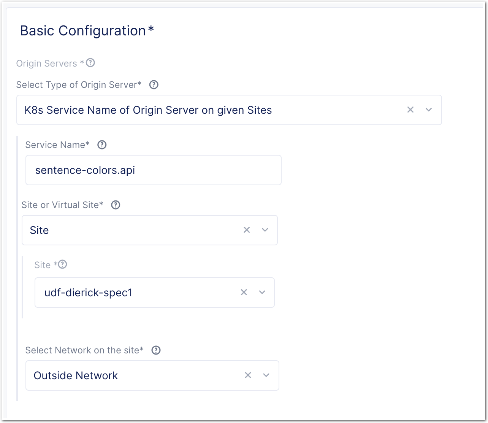

Workshop Volterra 10x > Class1 - F5XC WAAP Use Cases > Module 2 - Use Case 2 - Expose a private application and protect it with F5XC WAAP Source |
Lab 1 - Expose the private Arcadia application¶
Create the networking objects¶
For this lab, we will use the following object naming convention
| Object | Value |
|---|---|
| HTTP LB | EMEA-SE tenant : https://arcadia-<se_name>.emea-ent.f5demos.com F5-SALES-PUBLIC tenant : https://arcadia-<student_number>.sales-public.f5demos.com Enable HTTPS AutoCert |
| Origin Pool | Select IP Site for EMEA-SE tenant Site for F5-SALES-PUBLIC tenant Select Port 80 NO TLS |
Check you are in your Namespace
Create the Origin Pool targeting Arcadia private IP on given site
Create the HTTPS LB
Assigned the WAAP policy created in previous LAB
Test your Anycast HTTPS LB¶
- Check your Arcadia application is exposed and reachable from the F5XC Global Network
- Send Attacks as previous lab
Note
In this lab, you created a Multi-Cloud architecture where the application resides in a private location. And SecOps don’t have to know where is the app and how to reach this app. NetOps created the relevant Network Infrastrucute (Mesh Node) and SecOps just consume the objects created by NetOps.